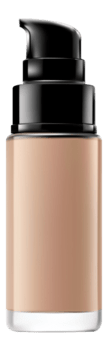
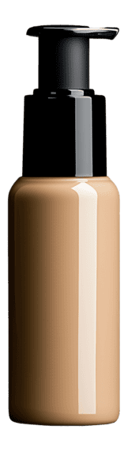
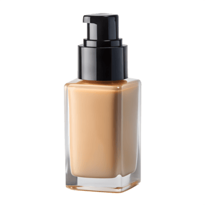

Sentiment Analysis of TikTok Comment Section for Evaluating Foundation Cosmetic Products
Using BERT Model
This system analyzes sentiments from TikTok comment sections to evaluate the performance and perception of foundation cosmetic products using BERT (Bidirectional Encoder Representations from Transformers) model.
Get Started


